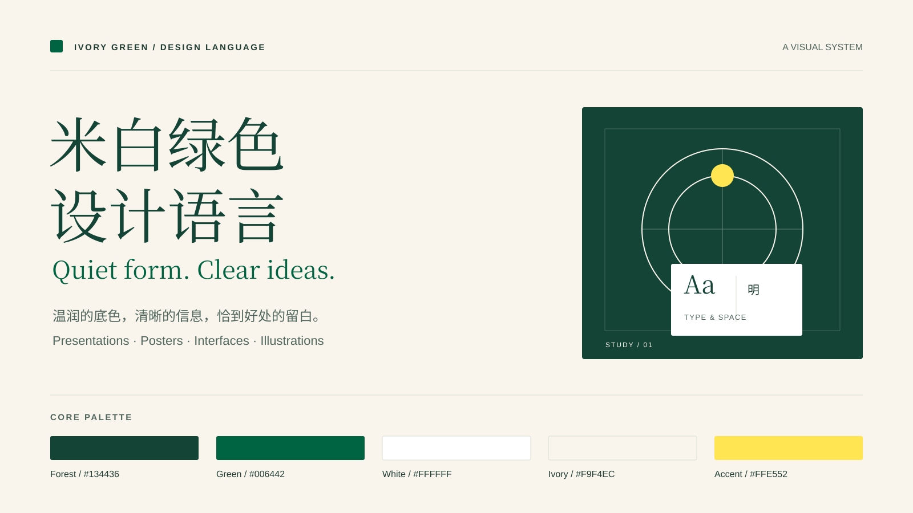

READING NOTES / 阅读札记
把想法写清楚，
也是一种设计。
一个标题，一段解释，一处恰当的留白。读者能看懂内容之间的关系，画面就已经有了秩序。
字体不必抢眼，但需要有清楚的层级。颜色不必很多，但每一种都应承担明确的角色。
米白 · 森林绿 · 编辑式排版
从一张海报，到一组演示文稿，再到可操作的界面。用温润的底色、清晰的层级和有分寸的绿色，建立一致的阅读体验。

01 / Principles
标题与正文有明显区别。把相关内容靠近，把章节之间的距离留足。无需给每一段文字添加卡片。
浅底适合连续阅读，深绿建立重点，黄色只作少量提醒。信息含义同时用文字和形状表达。
02 / Palette
#F9F4EC#134436#006442#FFE552底色、结构、动作与点缀各司其职。具体配比随内容调整。
03 / Try it
READING NOTES / 阅读札记
一个标题，一段解释，一处恰当的留白。读者能看懂内容之间的关系，画面就已经有了秩序。
字体不必抢眼，但需要有清楚的层级。颜色不必很多，但每一种都应承担明确的角色。
调整仅作用于上方样张；没有网络请求，也不会保存你的选择。字号不影响内容事实。
04 / Across formats
这些是可编辑的矢量源文件。原生 PPTX 或 PSD 需使用相应软件重建文本、图形与图层。
05 / Details
英文标题用衬线体，中文标题选宋体类，正文采用黑体类。中文保持自然字距，检查标点、数字和回退字体。
卡片适合独立模块、交互区或并列选项。连续论述优先直接排版，用段落和章节间距组织内容。
保留色彩角色和阅读节奏，按观看距离重设字号与密度。演示页围绕一个核心观点，海报围绕一个主视觉焦点。
06 / Review